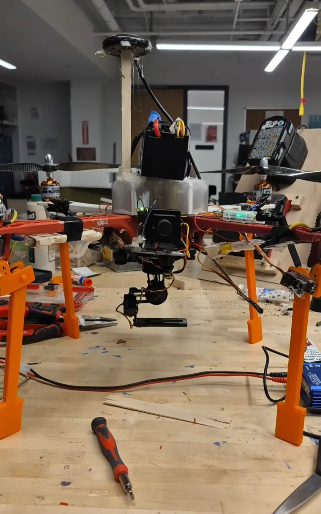

PROJECT 01 / UAV SYSTEMS01 — UAV DESIGN & ENTREPRENEURSHIP
DIY Drone — Modular Cinema Drone Venture
Developing modular cinema-drone components, from mechanical design and structural analysis to rapid prototyping and camera-payload integration. Selected for the COZAD Entrepreneurship Challenge and funded by the Innovation Living Learning Center.
MARCH 2025 — PRESENT